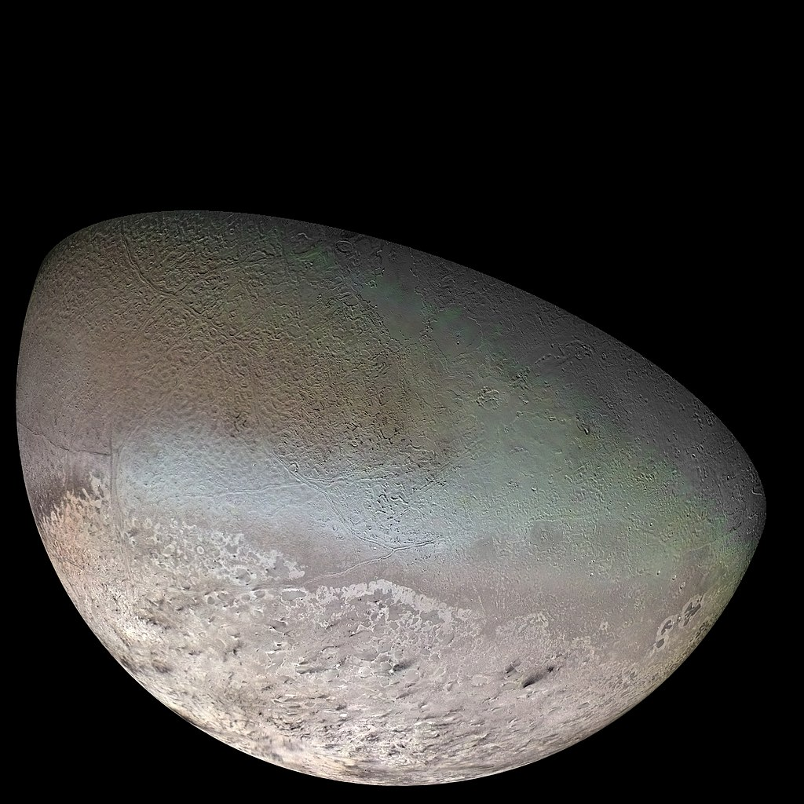
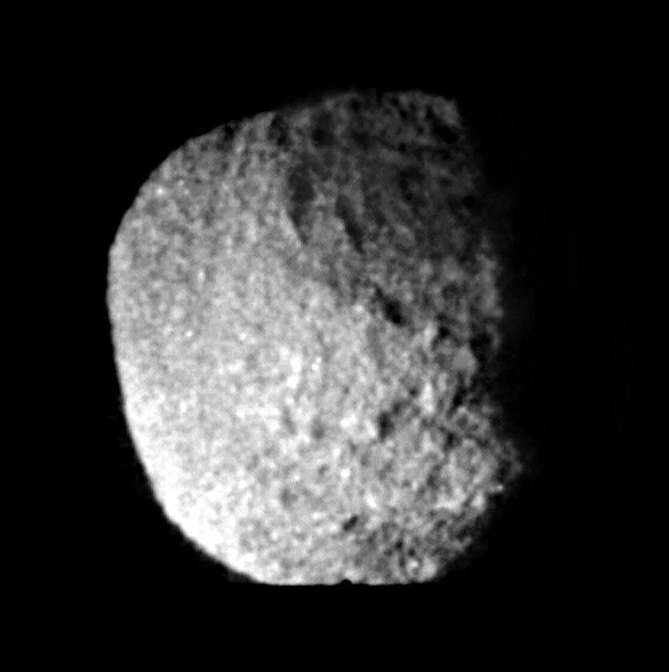

| Palydovai |
Vidutinis nuotolis nuo
centro tūkst. km |
Vidutinis skersmuo, km |
Keli
palydovų paveikslai |
|
| Najadė | 48,2 |
66 |
 |
 |
| Talasa | 50,1 |
82 |
||
| Despina | 52,5 |
150 |
||
| Galatėja |
61,9 |
176 | ||
| Larisa | 73,5 |
194 |
||
| S/2004 N1 |
105,3 |
16–20 |
||
| Protėjas |
117,6 |
420 |
||
| Tritonas |
354,8 |
2705 |
||
| Nereidė |
5513,8 |
340 |
||
| Halimedė |
16611 |
62 |
||
| Sao |
22228 |
44 |
||
| Laomedėja |
23571 |
42 |
||
| Psamatė |
48096 |
40 |
||
| Nesa |
49285 |
60 |
||